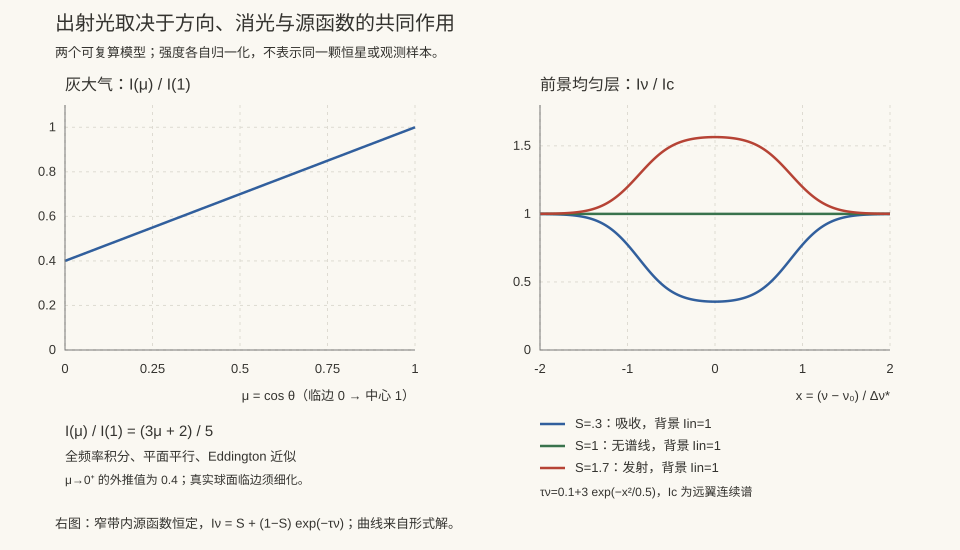

本页目录
天体 I · 辐射转移与恒星大气
对标：Rybicki & Lightman《Radiative Processes》/ Mihalas《Stellar Atmospheres》/ Carroll & Ostlie ch.9 ｜ 前置：em-03（辐射）、sm-02、atom-01（谱线） 天文学是一门几乎只能通过光来做的实验科学——除极少数例外（中微子、引力波、陨石），我们对天体的一切认识都编码在到达地球的光子里。本页讲清光如何携带信息、又如何在传播中被改造。
学习层：先做一块均匀滤镜，再问光从哪里来
1. 具身开场：一束手电穿过有雾的玻璃盒
把一束强度为 \(I_{\rm in}\) 的光送进一只均匀雾盒。雾会吸收/散射掉一部分光，也会沿视线发光；探测器只看到盒子出口。你调节“看起来有多厚”的光学厚度 \(\tau\)：薄时，入口信息仍清楚；厚时，出口越来越像介质自己的源函数。这个小盒子能把“传播中的信息”和“介质的发射”分开记账，但它不会凭一条出射亮度反推出整颗恒星的大气。
2. 形式桥：衰减项、源函数项与光学深度贡献
均匀、恒定源函数的标量转移方程是
出口账本只有两项：入口光的透射贡献 \(T=I_{\rm in}e^{-\tau}\)，以及每个光学深度小层发出的光在到达出口前的加权贡献。对 \(0\le t\le\tau\)，
（本实验取 \(S(t)=S\)）。因此 \(I_{\rm out}-S=(I_{\rm in}-S)e^{-\tau}\)：有限 \(\tau\) 下只有在 \(I_{\rm in}=S\) 的特殊边界时才有 \(I_{\rm out}=S\)；否则只能在 \(\tau\to\infty\) 的极限中趋近源函数。
薄极限要保留入口光的一阶衰减：\(e^{-\tau}=1-\tau+O(\tau^2)\)，所以
3. 预测门：先判主导项和边界
实验先隐藏曲线、分层贡献和源函数闭合。对当前预设预测：
- 薄 slab 中，出口的主要项是透射入口光、源函数发光，还是两者可比？
- 当 \(\tau\) 有限且 \(I_{\rm in}\ne S\) 时，能否精确写 \(I_{\rm out}=S\)？
- 若介质有散射，是否自动有 \(S=B\)？LTE、纯散射和部分热化的边界分别是什么？
4. 动手：沿光学深度读两本账
揭示后可切换薄/厚 LTE、入口与源函数相等、以及散射源函数预设，并调节 \(\tau\) 与 \(I_{\rm in}\)。响应式图显示光线从入口到出口的强度轨迹和 \(S\) 水平线；表格按光学深度区间列出每层对出口的源函数贡献、透射入口项、总和与 LTE/散射边界。
无 JavaScript 时的静态读法：默认取薄 LTE slab：\(I_{\rm in}=0.25\)、\(S=B=1.40\)、\(\tau=0.25\)。
| 账本层 | 数值 / 公式 | 解释 |
|---|---|---|
| 入口透射 | \(0.25e^{-0.25}=0.19470\) | 入口信息乘逃逸因子 |
| slab 源函数总贡献 | \(1.40(1-e^{-0.25})=0.30968\) | \(\int_0^{0.25}S e^{-(0.25-t)}dt\) |
| 出口强度 | \(I_{\rm out}=0.50438\) | 两项相加，有限厚度下不等于 \(S\) |
| 源函数边界 | LTE：\(S=B\) | 这是源函数闭合，不是由观测亮度自动推出的温度 |
| 厚度极限 | \(\tau\gg1\Rightarrow I_{\rm out}\to S\) | 需要 stated limit；薄 slab 不可直接套用 |
散射时 \(S=(1-\epsilon)J+\epsilon B\)；只有完全热化（\(\epsilon=1\)）或额外满足 \(J=B\) 等条件才退化为 \(S=B\)。这个均匀 slab 是正演玩具，不是恒星大气的唯一反演器。
5. 误区 / 模型边界
- 光学厚并不等于“看见真实表面”：它只说明贡献函数通常集中在 \(\tau\sim1\) 的层，\(S\) 还可能随深度、频率和角度变化。
- LTE 给出 \(S_\nu=B_\nu(T)\) 的局部闭合；散射源函数包含 \(J_\nu\)，不应把“有光子”直接改写成黑体。
- \(I_{\rm out}\approx S\) 可能只是大 \(\tau\) 的数值近似；亮度/源函数相等必须写出 \(I_{\rm in}=S\) 或 \(\tau\to\infty\) 等条件。
- 本实验只做恒定 \(S\)、单频、单方向、均匀 slab 的正演；恒星大气反演还需要结构、频率依赖、不透明度、几何、边界条件和观测噪声模型。

1. 比强度与辐射转移方程
比强度 \(I_\nu\)：单位面积、单位立体角、单位频率的能流。它在真空中沿光线守恒（这是"照片亮度与距离无关"的原因，而流量 \(F_\nu\propto1/d^2\) 才随距离下降）。
沿光线的演化：
这里 \(\alpha_\nu\) 是每单位长度的消光系数；若用质量不透明度 \(\kappa_\nu\)，则 \(\alpha_\nu=\rho\kappa_\nu\)。定义光学厚度 \(d\tau_\nu = \alpha_\nu ds\) 与源函数 \(S_\nu = j_\nu/\alpha_\nu\)：
两个极限：
- 光学薄 \(\tau\ll1\)：\(I_\nu\approx I_\nu(0)(1-\tau)+\int S_\nu d\tau\)（常源时为 \(I_{\rm in}+(S-I_{\rm in})\tau\)）——看穿整个介质，信息来自全体积（星云、星际气体）；
- 光学厚 \(\tau\gg1\)：\(I_\nu\to S_\nu\)——只能看到 \(\tau\sim1\) 的那一层，且强度趋于当地源函数。
热平衡下 \(S_\nu = B_\nu(T)\)（Planck 函数） → 光学厚天体发出黑体谱。这就是恒星近似为黑体的原因，也解释了"恒星表面"的含义：所谓光球，就是 \(\tau\approx2/3\) 的那一层——它不是物理界面，而是一个光学定义。
2. 有效温度与观测量
\(T_{\rm eff}\) 是定义式，不是实测温度——它是"若为黑体则应有的温度"。
天文的观测语言：
- 星等：\(m = -2.5\log_{10}F + \text{const}\)（对数标度，源自肉眼的响应）；
- 绝对星等 \(M\)：置于 10 pc 处的视星等；距离模数 \(m-M = 5\log_{10}(d/10\,\mathrm{pc})\)；
- 色指数 \(B-V\)：两波段星等差，是温度的代理（越蓝越热）。
HR 图的横轴正是色指数或 \(T_{\rm eff}\)（ap-02）。
3. 不透明度：光子如何被阻挡
\(\alpha_\nu\)（每单位长度）的主要来源：
- 电子散射（Thomson）：\(\sigma_T=6.65\times10^{-29}\ \mathrm{m^2}\)，与频率无关，主导高温电离区（也定义 Eddington 光度，ap-05）；
- 自由-自由（轫致）吸收：灰度/频率积分的 Kramers 标度是质量不透明度 \(\kappa_{\rm ff}\propto\rho T^{-7/2}\)，因此每长度系数 \(\alpha_{\rm ff}=\rho\kappa_{\rm ff}\propto\rho^2T^{-7/2}\)；这不是任意频率都可直接套用的律；
- 束缚-自由（光电离）：产生吸收边；
- 束缚-束缚：谱线；
- 负氢离子 H⁻：太阳型恒星光球的主要不透明度来源。
在分辨频率的自由-自由吸收中还要保留频率边界，例如 \(\alpha_{\nu,\rm ff}\propto\rho^2T^{-1/2}\nu^{-3}(1-e^{-h\nu/k_BT})g_{\rm ff}\)（系数和离子丰度省略）；因此不能把质量不透明度的 Kramers 标度、每长度的 \(\alpha_\nu\) 和全频率的频谱律混写。
光子的随机行走：光学厚介质中光子走 \(N\sim\tau^2\) 步才逃出。太阳中心产生的光子扩散到表面需要约十万年量级——我们看到的阳光，其能量早已在路上待了很久。
4. 谱线：天体物理的信息主干
谱线携带的信息量惊人：
- 波长 → 元素种类（atom-01）；
- 强度 → 丰度与激发/电离态，由 Boltzmann 分布 + Saha 方程联系温度密度：
- 多普勒移动 → 视向速度（发现系外行星、测星系红移、判定双星）；
- 展宽 → 温度（热致）、湍动、压强（碰撞）、自转（谱线致宽）；
- 塞曼分裂 → 磁场（太阳黑子磁场的测量方式）。
Saha 方程的一个漂亮后果：氢的巴尔末线在 A 型星（约 10000 K）最强——不是因为 A 型星氢最多，而是因为该温度下处于 \(n=2\) 能级的氢原子比例最高。恒星光谱分类（OBAFGKM）曾被误以为是成分序列，实为温度序列——这是天文学史上一次重要的概念澄清。
5. 练习与要点
例 1（\(\tau=2/3\) 的来历） Eddington 近似下求解转移方程给 \(T(\tau)^4=\tfrac{3}{4}T_{\rm eff}^4(\tau+\tfrac23)\)——在 \(\tau=2/3\) 处 \(T=T_{\rm eff}\)，故光球定义于此。
例 2（临边昏暗） 太阳边缘偏暗：视线斜穿大气，\(\tau=2/3\) 对应更高（更冷）的层。这是"只能看到 \(\tau\sim1\) 层"的直接可视化证据，且可用来反推大气温度梯度。
例 3（多普勒的量级） 木星使太阳产生约 12 m/s 的视向速度摆动。现代高精度光谱仪的稳定度已达 m/s 量级，这正是径向速度法探测系外行星的物理基础。\(\blacksquare\)
下一页：把辐射转移与流体静力平衡放在一起，就能算出一颗恒星的内部结构——以及它为什么必然会死。